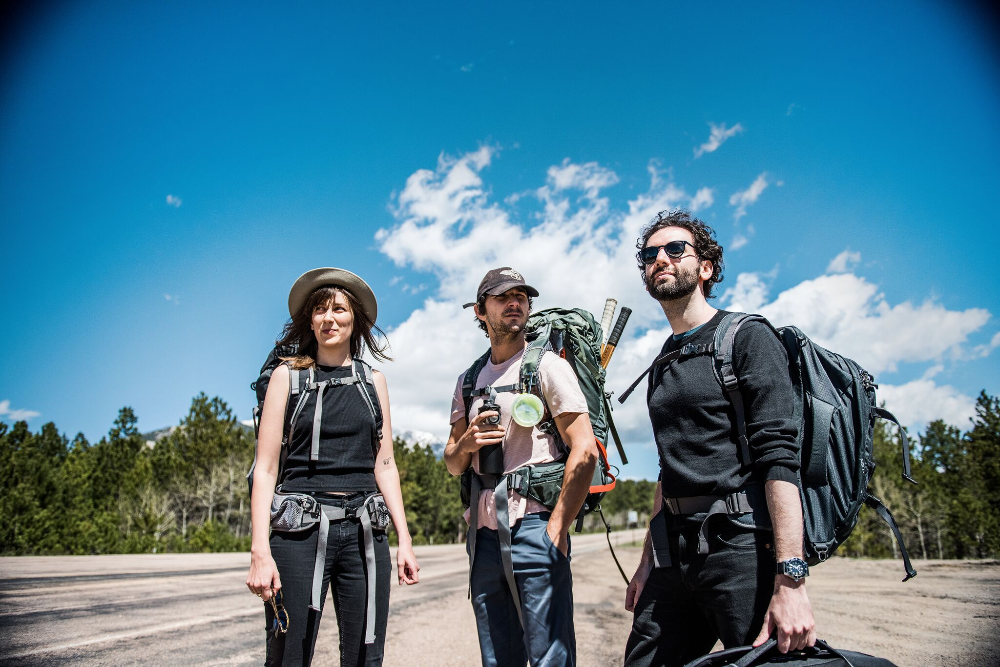

All events will take place at Brown University April 9-15 and are free and open to the public. The full schedule including times/locations and ticket reservations will be available online in April.
In May 2016, Shia LaBeouf (@thecampaignbook) tweeted out his GPS coordinates, asking his fans to pick him up and take him, along with partners Luke Turner (@luke_turner) and Nastja Ronkko (@nastjaronkko), anywhere they want. This launched #TAKEMEANYWHERE, an art project that would yield a film of staggering scale and beauty, as the artists took a cross-country trip that illuminated the beauty of humanity. It’s a film about the artists, about their fans, about the country. It’s a film about all of us.
For a Keynote event, we will screen #TAKEMEANYWHERE. Afterwards, Mr. LaBeouf and Mr. Turner will conduct a Q&A (with Ms. Ronkko Skyping in). You don’t want to miss it.
Based on the beloved Ian McEwan novel, “On Chesil Beach” is a beautiful and important new film due in theaters on May 18th. In 1962, newlyweds Florence (Academy Award nominee Saoirse Ronan) and Edward (Billy Howle), both in their early 20s and also both virgins, spend their honeymoon preoccupied and terrified by the upcoming consummation of their marriage. Afterwards, join us for a Q&A with director Dominic Cooke (The Hollow Crown).
Isabelle Fuhrman (The Orphan), Abigail Breslin (Scream Queens), and Victoria Tennant (The Handmaid’s Tale [film]), join us for a panel on horror. Horror is a genre infamous for its often stereotypical and sadistic treatment of women on the screen. These actors have all been involved in horror/sci-fi films. They will talk about their time in the industry, their thoughts on the genre, how it treated them, and how it treats them. There will be a moderated portion, as well as a Q&A.
IFF’s 2018 Official Selection of undergraduate and graduate student films features a curated program of 25 of the strongest films. This year’s Official Selection of screenplays will honor the top three scripts from four categories: undergraduate short, graduate short, features and TV pilots. The students on our programming and screenplay departments created these selections from over 500 submissions, representing a total of 27 countries around the world.
As one of the first student-run film festivals in the world to pioneer an initiative geared towards virtual reality, IFF’s New Media Initiative aims to foster the next generation’s dialogue around VR storytelling. This year, IFF will showcase student-made VR and AR projects on Google Daydream and HTC Vive, as well as provide a hands-on environment for attendees to explore cutting-edge new media technologies.
Bo Burnham’s directorial debut premiered at the 2018 Sundance Film Festival to audience and critical acclaim, featuring breakout star Elsie Fisher. The story follows thirteen-year-old Kayla as she endures the tidal wave of contemporary suburban adolescence as she makes her way through the last week of middle school--the end of her thus far disastrous eighth grade year before she begins high school. Eighth Grade will be the final screening of IFF 2018.
Written and starring lifelong friends Daveed Diggs (Hamilton) and Rafael Casal, Blindspotting is about the intersection of race and class in increasingly-gentrified Oakland. It’ll make you laugh and shudder, and it’ll stay with you long after it’s over.
RBG, an intimate portrait of the life and work of Justice Ruth Bader Ginsburg, premiered at Sundance earlier this year and is due in theaters on May 4th. With unprecedented access, the film explores how her early legal battles changed the world for women. This revelatory documentary screening will be followed by a dynamic Q&A with Director Betsy West.
“This year’s “Moonlight.” That’s what IndieWire had to say about this deeply moving Sundance standout. Starring Raul Castillo and Josiah Gabriel, and directed by documentary veteran Jeremiah Zagar, this film follows three brothers through their troubled and formative childhood in upstate New York. Based on the novel by Justin Torres.
IFF is proud to announce its first-ever partnership with the Aegean Film Festival, based in Patmos, Greece. IFF will feature the Aegean Film Festival’s Best of Europe Short Program, made up of award-winning short films from across Europe. A program of IFF’s official selection will be screened at the Aegean Film Festival this summer. This partnership aims to build lasting relationships between IFF and the international film community and provide new opportunities for students to engage with the globally-practiced craft of short filmmaking.
Writer/Director of That Awkward Moment and Co-Creator of FOX’s Ghosted, Tom Gormican will join us for an intimate workshop and conversation. Spots will be limited.